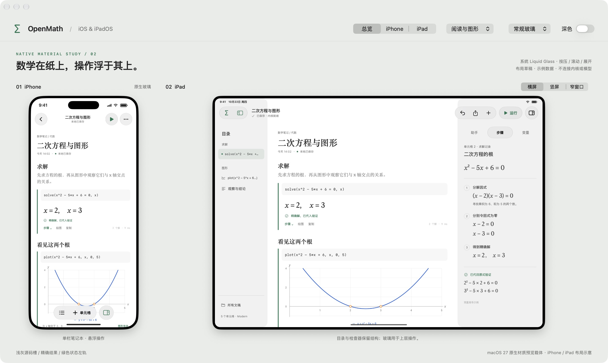

<!doctype html>
<html lang="zh-CN">
<meta charset="utf-8">
<meta name="viewport" content="width=device-width,initial-scale=1">
<title>OpenMath · 原生玻璃草稿 02</title>
<style>
  *{box-sizing:border-box}body{margin:0;background:#e9edea;color:#202622;font:14px/1.7 -apple-system,BlinkMacSystemFont,"PingFang SC",sans-serif}header{padding:22px 34px;border-bottom:1px solid #ccd4ce;display:flex;gap:12px;align-items:center}header strong{font-size:18px}header span{color:#68756c;font-size:12px}a{color:#1d7550;text-decoration:none}header a{margin-left:auto;font-size:12px}main{max-width:1700px;margin:auto;padding:28px 34px 45px}h1{font-size:25px;font-weight:500;letter-spacing:-.6px;margin:0 0 8px}p{font-size:12px;color:#5b6960;margin:0 0 22px}nav{display:flex;gap:7px;flex-wrap:wrap;margin-bottom:18px}button{font:inherit;font-size:12px;color:#526157;background:transparent;border:1px solid #c8d2ca;border-radius:7px;padding:6px 13px;cursor:pointer}button[aria-pressed=true]{background:#fff;border-color:#fff;color:#1d7550}figure{margin:0}img{display:block;width:100%;height:auto;border-radius:14px}figcaption{font-size:11px;color:#637167;margin-top:12px;display:flex;justify-content:space-between;gap:20px}footer{border-top:1px solid #ccd4ce;margin-top:28px;padding-top:17px;font-size:11px;color:#637167;display:flex;justify-content:space-between;gap:20px}code{font-size:11px}button:focus-visible,a:focus-visible{outline:2px solid #1d7550;outline-offset:3px}@media(max-width:650px){header{padding:15px 18px;flex-wrap:wrap}header a{margin-left:0}main{padding:23px 15px}h1{font-size:22px}figcaption,footer{display:block}footer>span{display:block;margin-top:10px}}
</style>
<header><strong>∑ OpenMath</strong><span>/ iOS & iPadOS · 草稿 02</span><a href="../../ios-ipados-workbench-02.md">设计说明 ↗</a></header>
<main>
  <h1>原生 Liquid Glass 材质草稿</h1>
  <p>这次使用 SwiftUI 系统材质。下方为实际预览窗口截图；原生预览程序已在本机打开。Mac 承载 iPhone / iPad 布局示意。</p>
  <nav aria-label="截图状态">
    <button data-file="overview.jpg" aria-pressed="true">常规玻璃 · 总览</button>
    <button data-file="clear-glass.jpg" aria-pressed="false">通透玻璃</button>
    <button data-file="menu.jpg" aria-pressed="false">展开菜单</button>
    <button data-file="phone-steps.jpg" aria-pressed="false">iPhone 步骤</button>
    <button data-file="ipad-portrait.jpg" aria-pressed="false">iPad 竖屏</button>
    <button data-file="dark.jpg" aria-pressed="false">深色</button>
  </nav>
  <figure><a id="full" href="overview.jpg" target="_blank"></a><figcaption><span id="caption">常规玻璃 · 总览</span><span>点击图片查看原尺寸 · 预置内容，不连接内核或模型</span></figcaption></figure>
  <footer><span>原生源稿：<a href="GlassWorkbench.swift">GlassWorkbench.swift</a> · <a href="build-preview.sh">构建脚本</a></span><span>本机：<code>target/ios27-glass-study/OpenMath Glass Study.app</code></span></footer>
</main>
<script>
  document.querySelector('nav').addEventListener('click',event=>{
    const button=event.target.closest('[data-file]');if(!button)return;
    document.querySelectorAll('nav button').forEach(item=>item.setAttribute('aria-pressed',String(item===button)));
    document.getElementById('shot').src=button.dataset.file;
    document.getElementById('shot').alt='OpenMath 原生草稿：'+button.textContent;
    document.getElementById('full').href=button.dataset.file;
    document.getElementById('caption').textContent=button.textContent;
  });
</script>
</html>
